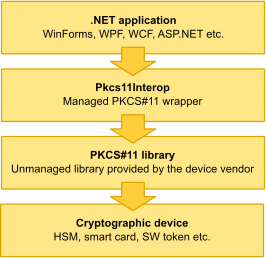
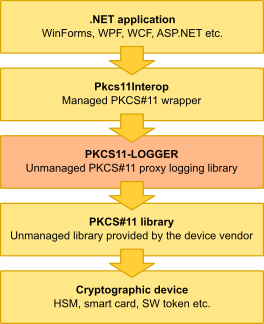

English
EnglishPkcs11Interop is managed library written in C# that brings full power of PKCS#11 API to the .NET environment. It loads unmanaged PKCS#11 library provided by the cryptographic device vendor and makes its functions accessible to .NET application.
Following figure presents the typical usage of Pkcs11Interop library in .NET application:

Next code sample shows how to load PKCS#11 library via Pkcs11Interop in .NET application:
string pkcs11Library = null;
if (Net.Pkcs11Interop.Common.Platform.Uses64BitRuntime)
{
pkcs11Library = @"c:\path\to\pkcs11-x64.dll";
}
else
{
pkcs11Library = @"c:\path\to\pkcs11-x86.dll";
}
using (var pkcs11 = new Net.Pkcs11Interop.HighLevelAPI.Pkcs11(pkcs11Library, true))
{
// Do something interesting
}
Due to the complexity of PKCS#11 API it is not rare that user needs to troubleshoot communication problems between application and PKCS#11 library. That is the moment when PKCS11-LOGGER may come handy.
Logger takes place between the application and the original PKCS#11 library. Application calls PKCS#11 function provided by logger, logger calls the same function provided by the original PKCS#11 library and while logging everything it returns the result to the application.
Following figure presents the typical usage of Pkcs11Interop library with PKCS11-LOGGER proxy in .NET application:

Next code sample shows how to load PKCS#11 library via PKCS11-LOGGER and Pkcs11Interop in .NET application:
string pkcs11Library = null;
string loggerLibrary = null;
string logFile = null;
if (Net.Pkcs11Interop.Common.Platform.Uses64BitRuntime)
{
pkcs11Library = @"c:\path\to\pkcs11-x64.dll";
loggerLibrary = @"c:\path\to\pkcs11-logger-x64.dll";
logFile = @"c:\path\to\pkcs11-logger-x64.log";
}
else
{
pkcs11Library = @"c:\path\to\pkcs11-x86.dll";
loggerLibrary = @"c:\path\to\pkcs11-logger-x86.dll";
logFile = @"c:\path\to\pkcs11-logger-x86.log";
}
System.Environment.SetEnvironmentVariable("PKCS11_LOGGER_LIBRARY_PATH", pkcs11Library);
System.Environment.SetEnvironmentVariable("PKCS11_LOGGER_LOG_FILE_PATH", logFile);
System.Environment.SetEnvironmentVariable("PKCS11_LOGGER_FLAGS", @"64");
using (var pkcs11 = new Net.Pkcs11Interop.HighLevelAPI.Pkcs11(loggerLibrary, true))
{
// Do something interesting
}
Analysis of the logged information should be performed by a person familiar with PKCS#11 specifications.
Here’s the short sample of the content extracted from the beginning of the log file:
0x000013c8 : 0x00001078 : ****************************** 2015-12-14 23:56:07 ***
0x000013c8 : 0x00001078 : PKCS11-LOGGER 2.1.0
0x000013c8 : 0x00001078 : PKCS#11 logging proxy module
0x000013c8 : 0x00001078 : Developed as a part of the Pkcs11Interop project
0x000013c8 : 0x00001078 : Please visit www.pkcs11interop.net for more information
0x000013c8 : 0x00001078 : ****************************** 2015-12-14 23:56:07 ***
0x000013c8 : 0x00001078 : Successfuly loaded C:\SoftHSM2\lib\softhsm2-x64.dll
0x000013c8 : 0x00001078 : Memory contents are dumped without endianness conversion
0x000013c8 : 0x00001078 : ****************************** 2015-12-14 23:56:07 ***
0x000013c8 : 0x00001078 : Calling C_GetFunctionList
0x000013c8 : 0x00001078 : Input
0x000013c8 : 0x00001078 : ppFunctionList: 000000C98228E8E0
0x000013c8 : 0x00001078 : Output
0x000013c8 : 0x00001078 : Note: Returning function list of PKCS11-LOGGER
0x000013c8 : 0x00001078 : Returning 0 (CKR_OK)
0x000013c8 : 0x00001078 : ****************************** 2015-12-14 23:56:07 ***
0x000013c8 : 0x00001078 : Calling C_Initialize
0x000013c8 : 0x00001078 : Input
0x000013c8 : 0x00001078 : pInitArgs: 000000C9E59AF5E0
0x000013c8 : 0x00001078 : CreateMutex: 0000000000000000
0x000013c8 : 0x00001078 : DestroyMutex: 0000000000000000
0x000013c8 : 0x00001078 : LockMutex: 0000000000000000
0x000013c8 : 0x00001078 : UnlockMutex: 0000000000000000
0x000013c8 : 0x00001078 : Flags: 2
0x000013c8 : 0x00001078 : CKF_LIBRARY_CANT_CREATE_OS_THREADS: FALSE
0x000013c8 : 0x00001078 : CKF_OS_LOCKING_OK: TRUE
0x000013c8 : 0x00001078 : pReserved: 0000000000000000
0x000013c8 : 0x00001078 : Returning 0 (CKR_OK)
0x000013c8 : 0x00001078 : ****************************** 2015-12-14 23:56:07 ***
0x000013c8 : 0x00001078 : Calling C_GetInfo
0x000013c8 : 0x00001078 : Input
0x000013c8 : 0x00001078 : pInfo: 000000C98228E7F0
0x000013c8 : 0x00001078 : Output
0x000013c8 : 0x00001078 : pInfo: 000000C98228E7F0
0x000013c8 : 0x00001078 : cryptokiVersion:
0x000013c8 : 0x00001078 : major: 2
0x000013c8 : 0x00001078 : minor: 30
0x000013c8 : 0x00001078 : manufacturerID: SoftHSM
0x000013c8 : 0x00001078 : flags: 0
0x000013c8 : 0x00001078 : libraryDescription: Implementation of PKCS11
0x000013c8 : 0x00001078 : libraryVersion:
0x000013c8 : 0x00001078 : major: 2
0x000013c8 : 0x00001078 : minor: 0
0x000013c8 : 0x00001078 : Returning 0 (CKR_OK)
Warning: Log files produced by PKCS11-LOGGER may contain sensitive information and should not be shared publicly.